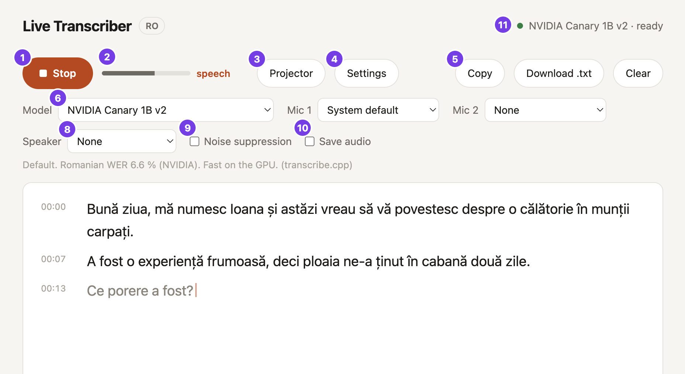
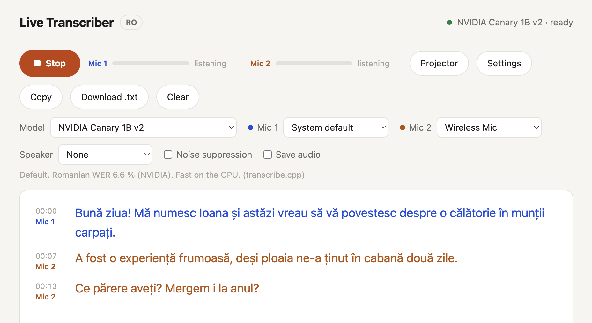
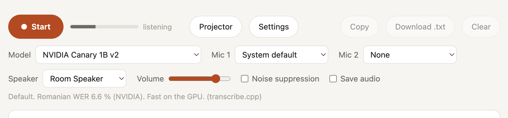
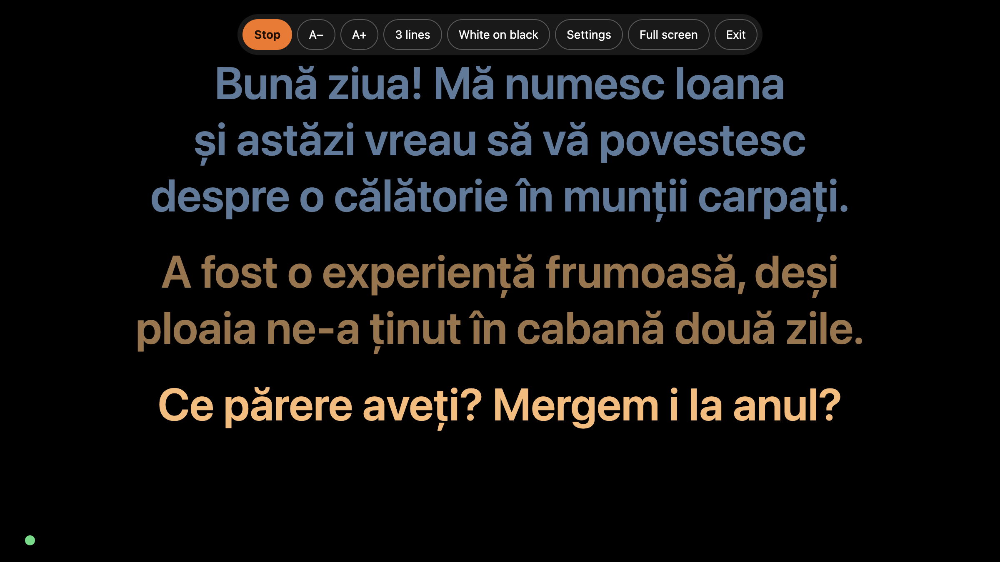
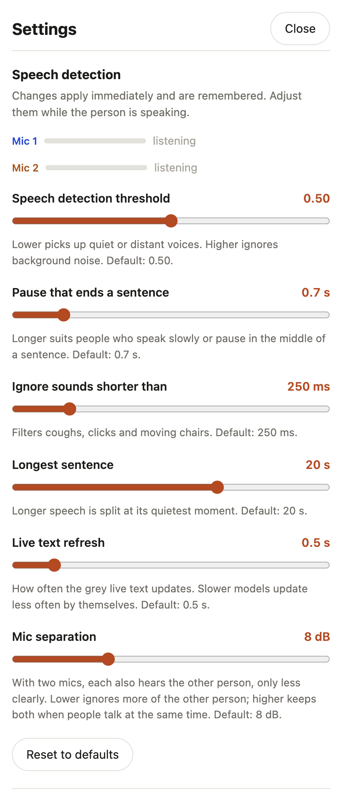

User manual
Version dev ·
Live Transcriber turns Romanian speech into text while people talk. Put the computer on the table, press Start, and read along. Everything runs on your own computer: no account, no internet after the first start, and the audio never leaves the machine.
-mac-arm64.dmg-windows-setup.exe.dmg and drag Live Transcriber into Applications.
Windows: run the installer.Press Start and talk. Grey text with a blinking cursor is the live guess while someone speaks. After a short pause (about 0.7 s) the sentence is written again in full and turns black: that is the final text, and it is saved straight away. Press Stop when you are done.

Transcripts are saved in Documents → Live Transcriber (menu File → Open transcripts folder). Stop and Start continue the same file; Clear starts a new one. Your choice of microphones and model is remembered for next time.
For an interview, a doctor and a patient, or a panel of two, give each person their own microphone, close to them, and choose the second one under Mic 2. Any microphone the computer sees works: built-in, USB, jack, Bluetooth, or the receiver of a wireless kit.

Mic 1: / Mic 2: in the saved file. Lines spoken at the same
time are marked ⇄.If the audience needs to hear the people talking, connect a speaker and choose it under Speaker. It plays straight away, even before Start, so you can do a sound check: talk and watch the meter. Start and Stop don't affect it; None turns it off. The app always opens with None, so it never starts howling by surprise. Volume is remembered.

Press Projector (or P): the window fills with large captions, the newest sentence brightest. Move the mouse to show the controls; they hide again after a few seconds, so the audience sees only text. The light in the bottom-left corner shows the microphone: grey off, green listening, orange someone speaking.
| Key | In the projector view |
|---|---|
| + − | text size |
| L | how many sentences are shown (1–5) |
| T | colours: white on black, yellow on black, black on white |
| F, double-click | full screen |
| Esc | back to the transcript |

Projector as a second screen (not mirrored): open Settings → Open caption window. It opens on the projector, full screen; if it doesn't, drag it there and press F. It shows only the captions, while your window keeps all the controls out of the audience's sight. Text size, Sentences shown and Colours are also in Settings, under Projector display.
The defaults suit most rooms. If something goes wrong, change one setting at a time while someone is talking, and watch the text. Changes apply immediately and are remembered. A dot ● marks a changed setting; Reset to defaults undoes them all.
| Setting | What it does |
|---|---|
| Speech detection threshold default 0.50 |
How sure the app must be that a sound is speech. Lower catches quiet or distant voices; higher ignores background noise. |
| Pause that ends a sentence default 0.7 s |
The silence that closes a sentence. Longer suits people who speak slowly or pause mid-sentence. |
| Ignore sounds shorter than default 250 ms |
Drops coughs, clicks and moving chairs. |
| Longest sentence default 20 s |
Longer speech is split at its quietest moment. |
| Live text refresh default 0.5 s |
How often the grey live text updates. |
| Mic separation default 8 dB |
Only with two mics. Lower ignores more of the other person; higher keeps both when people talk at the same time. |

Find what you see, make the change, and check it while the person talks.
| What you see | What to do |
|---|---|
| A quiet, soft-spoken or distant person is missed; the meter barely moves | Move the mic closer or give them their own. Then lower Speech detection threshold to 0.35–0.40. |
| Background noise (air conditioning, traffic, chatter) turns into stray words | Raise Speech detection threshold to 0.6–0.7. For steady noise, also tick Noise suppression. |
| A slow speaker, or one who stops to think, gets sentences cut in two | Pause that ends a sentence: 1.2–2 s. |
| A fast speaker who never pauses fills the screen with one huge line | Longest sentence: 10–15 s. |
| Quick back-and-forth on one mic: two people's words end up in one line | Pause that ends a sentence: 0.5 s, or one mic per person. |
| Coughs, clicks or moving chairs turn into words | Ignore sounds shorter than: 300–400 ms. |
| Very short answers (“Da.”, “Nu.”) are lost | Ignore sounds shorter than: 150 ms. |
| Two mics: one person's words also appear under the other mic | Mic separation: 5 dB, and move the mics further apart. |
| Two mics: when both talk at once, one of them is lost | Mic separation: 12 dB. |
| A presenter who walks around | A wireless clip-on mic as Mic 1. |
| A group around a table | The laptop in the middle, screen up. For a long table, a USB conference mic. |
| Text appears late on an older computer | Model: Parakeet Romanian 110M (section 8), and Live text refresh: 1 s. |
| Strong accents, dialect, mumbling | No setting fixes these; a microphone close to the mouth helps most. |
Keep NVIDIA Canary 1B v2, the default and the most accurate. If text appears slowly on an older computer, choose Parakeet Romanian 110M: it is much faster, but writes in lowercase without punctuation. The other models in the list are alternatives to try. Models not downloaded yet show their size; choosing one asks first, downloads it and switches to it when it is ready. The choice is remembered.
| Problem | What to do |
|---|---|
| Start does nothing, or “Microphone access was blocked” | Mac: System Settings → Privacy & Security → Microphone, turn on Live Transcriber. Windows: Settings → Privacy & security → Microphone, allow desktop apps. Then restart the app. |
| A mic or the speaker shows not connected | Plug it in, switch it on or pair it again. It joins again by itself. |
| The meter moves but no text appears | Check that the right mic is chosen; lower Speech detection threshold. |
| The speaker howls | See section 4. |
| Anything else | Menu Help → Open logs folder, and send the file server.log with a short description on
the project's GitHub page (Issues). |